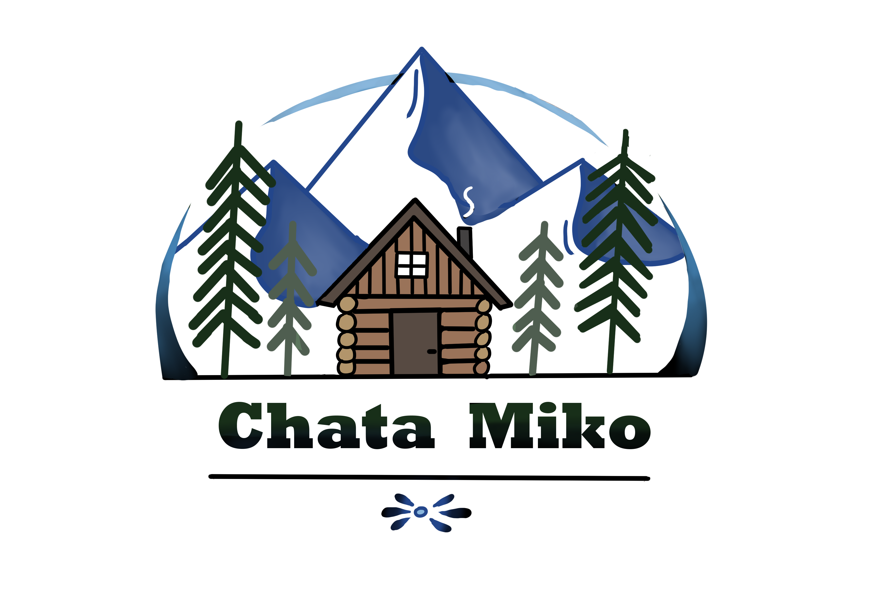

Chata MIKO
Súkromný pobyt v Nízkych Tatrách
{kind=link}
{kind=link}
{kind=link}
{kind=link}
{kind=link}
{kind=link}
{kind=link}
{kind=link}
{kind=link}
{kind=link}
{kind=link}
{kind=link}
Max. 7 osôb
Súkromná chata uprostred lesa
4 lôžka + 1 prístelka + 1 rozkladacia pohovka
Zvieratká nie sú povolené
Ceny
- len 59 €/noc za celú chatu (pri rezervácii na 4 a viac nocí)
- 3 noci za 225 €
- Elektrina: 0,60 €/kWh (priemerne 10 €/pobyt)
- Rekreačný poplatok: 1 €/osoba/deň (deti neplatia)
- Záloha: podľa dohody vopred na účet
O chate MIKO
Chata Miko v Krpáčove Vás pozýva prežiť Vašu letnú dovolenku do pokojného prostredia rekreačného strediska Krpáčovo, neďaleko obce Dolná Lehota a strediska Tále.
Od apríla do októbra sú Vám dvere v našej chate otvorené. Ubytujeme rodinky, skupinky, páry i jednotlivcov. Celková kapacita je 7 osôb.
Počas Vášho pobytu je Vám k dispozícii obývacia miestnosť s krbovými kachľami a s pohodlnou rohovou pohovkou (na spanie ako dvojposteľová), televízorom so satelitným príjmom (slovenské, české aj zahraničné programy), DVD prehrávačom s mnohými filmami a koncertmi skupín na DVD, rádiom s CD prehrávačom.
Na prízemí sa tiež nachádza kuchynka s elektrickým varičom, rýchlovarnou kanvicou, mikrovlnnou rúrou, potrebným kompletným kuchynským vybavením, aj základnými surovinami. Prízemie dotvára chodbička, kde nájdete chladničku s mrazničkou a rovnako kúpeľňu so sprchovacím kútom a toaletou, kde sú dostupné aj čistiace prostriedky a čisté uteráky.
Drevenými schodmi sa presuniete na poschodie do spálni, kde na Vás čakajú štyri samostatné lôžka, jedno lôžko s prístelkou. Dve lôžka s prístelkou sú v pravej časti, dve lôžka v ľavej časti, ktorá je oddelená závesom. Tu využijete ďalší televízor so satelitným príjmom. Zo spálne, ale aj obývačky vedie vstup na terasu s pekným výhľadom na okolitý les.
Veľký altánok so záhradným krbom, ohnisko s posedením a dokonalý oddych Vám poskytne exteriér chaty. Ak prídete aj s bicyklami, na ich bezpečnú úschovu Vám sprístupníme uzamykateľnú kôlničku. Priamo pred chatou si zaparkujete Vaše autá, kde prístup na parkovisko je uzavretý závorou a môžete si naplno užiť Vaše dovolenkové chvíle. Objekt je zvonku chránený kamerovým systémom.
Nádherná okolitá príroda Nízkych Tatier Vám ponúka zaujímavé turistické možnosti. Odporúčame Vám napríklad výstup k Horskému hotelu Srdiečko (9 km) odkiaľ sa vyveziete lanovkou priamo na Chopok. Obľúbenou trasou je tiež túra od Chopku na Ďumbier s dychberúcimi výhľadmi na celé okolie. Len 3 kilometre od ubytovania sa rozprestiera Prírodné kúpalisko Tále situované v Bystrej doline. Tu nájdete aj Golfové ihrisko Gray Bear Tále. Rovnako zaujímavý je výlet do Bystrianskej jaskyne, Jaskyne mŕtvych netopierov, jazda Čiernohronskou železničkou v Čiernom Balogu alebo návšteva Lesníckeho skanzenu vo Vydrovskej doline.
Už teraz sa na Vás tešíme!
Prečo si vybrať nás?
- Kompletné súkromie a veľký pozemok
- Skvelá poloha pri Táloch a Chopku
- Výborný pomer ceny a kvality
- Domáca atmosféra s tradičným vybavením
Lokalita

Nachádza sa v pokojnej chatovej osade Krpáčovo, blízko obľúbenej rekreačnej oblasti Tále a Chopok.
Kontaktujte nás
p. Kočtúchová
+421 911 551 214
info@chatamiko.sk
Rezervácie čoskoro online!
Pracujeme na spustení rezervačného systému s prihlasovaním.